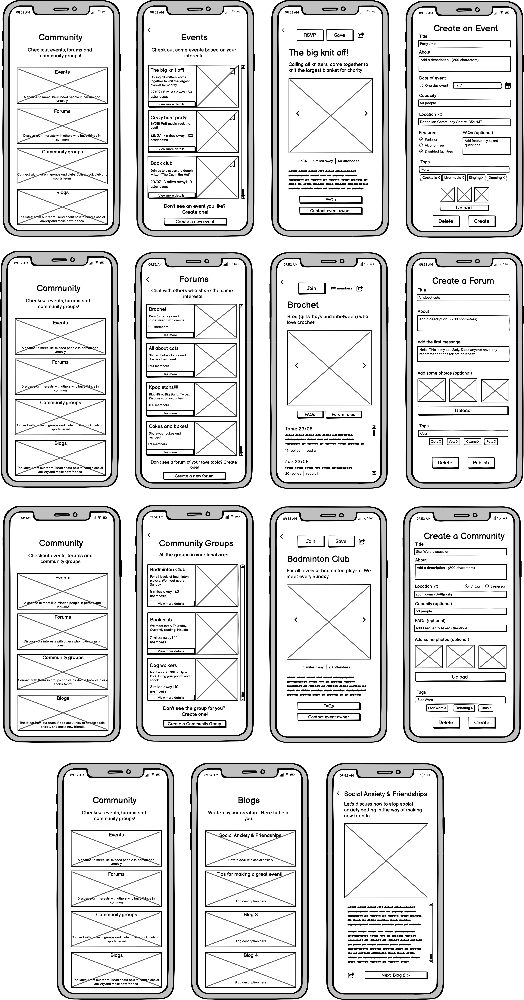

View friend matches and chatting to new friends
View and create events, forums & community groups and view blogs


![A series of three photos. The first says Aloha in a curvy font and turquoise text. Three iphone screens point to different stages of the app. The first iphone shows the community page, with the text 'connect with the local community.' The next is an event page: attend events! The final iphone is a forum page which says 'join virtual forums.'
The next photo is of a large iphone, on the screen is a profile page for a Hispanic man with dark hair called Leo. Leo is holding a tray with a lasagne fresh out of the oven. The profile shows that Leo is a leo star sign, he is career focused, left wing, LGTBAQ+ and has a new job. Leo's bio says: I have recently started a new job and I am new to the area. I work in marketing. I am looking for new and accepting friends who can show me around town!
The final photo says: Say Aloha to new friendships. The app's ability to offer ice-breaker prompts is also shown, with sayings like](../assets/friend-images/aloha-overview.png)
To better understand the friend-making market I was working in, I analysed the top three competitor apps: Meetup, Bumble and Friender.
In order to overview and frame the problem, I set out by completing a time-boxed (10 minute) whiteboard session. I wanted to define the user needs and goals, frustrations, assumptions and constraints.
I found pushing myself in a confined time frame really helped to move the idea forward. In a real life scenario, I understand how this would be useful to do a whiteboard session with a project manager or project owner who might be crunched for time. This really helped me to progress to future stages.
I surveyed a collection of potential users of the app (using SurveyMonkey) - these were people of varying ages, genders and needs (such as extraverted or intraverted personality types). This helped me to better understand the needs, attitudes and motivations of my users. This also helped to confirm the assumptions I had made in the previous whiteboard session.
80% said they face challenges when speaking to new people
60% said they would be open to using an app to make friends

When participants were asked what features they would like to see in the app, these were the most common answers:
These features aligned well with the ones I had already pin-pointed from the competitive analysis, so I knew I was on the right path to include them in my friend-making app.
Three user personas were created to represent a selection of average users of the Aloha app. I also created a user journey map to outline the various stages, actions and emotions a user goes through whilst using the friend-making app. This helps to identify areas of improvement and design features that address the users' needs and feelings at every stage.
![Three user personas.
1: The introverted bookworm: Laura. A black and white photo of a bi-racial woman reading a book. Background: Laura is a 26 yo introvert who
enjoys reading. Laura works
as a remote freelance writer
and feels socially isolated.
Challenges: Laura experiences social anxiety and finds it hard to initiate conversations.
Laura prefers gradual and low pressure interactions.
Goals: Laura wants to connect with those that share her passion for literature. She desires meaningful conversations, book recommendations and to join a book club.
Expectations: Laura expects the app to suggest
compatible individuals who will partake in conversations around books. Laura expects the app to suggest ice-breaker conversation prompts.
2: The Timid Tech Enthusiast: Amir. A black and white photo of a smiling south Asian man using a laptop. Background: Amir is a 29 year old Software Engineer who loves tech and video games. He has recently moved to a new city and wants to expand his circle.
Challenges: Amir struggles to approach new
people in social settings; he needs a
platform that helps him overcome this barrier.
Goals: Amir wants to meet new people who share his enthusiasm for tech and would like to collaborate on tech-related projects.
Expectations: Amir expects the app to suggest friends with similar tech and gaming interests, provide event notifications, offer conversation starters and allow group planning activities.
3: New professional in Town: Bobbie. A photo of a young black woman, lay on her front, crossing her legs and resting her head on her hand. Background: Bobbie is a 30 year old who
has just moved to a new town
for her job. She feels lonely &
misses her old friends. As she
is new to the area she doesn't
know where to go in the town in order to meet people.
Challenges: Bobbie lacks knowledge on the local
scene, making it hard to navigate the
town and find opportunities to meet
like-minded individuals.
Goals: Bobbie wants to establish a
social network in town &
discover local places visit.
Expectations: Bobbie expects the app to provide
suggestions for local events, recommend interest-based groups and activities, facilitate private messaging for connecting with new friends.](../assets/friend-images/user-pers3.png)
As a developer, with a passion for design, I entered into the UX design process thinking that it would be time-consuming and unnecessary. Why bother with all this empathising and discussion, why not just go straight into the designing? I see how wrong I was and that thinking that way came from a lack of understanding. This journey so far has given me valuable insights, taught me that what I think is not always what others think and that my users are at the forefront of every step.
I set myself a timer and completed a quick whiteboard session to map out the basic wireframes of the application, as this process had been successful when in the problem framing stage. This was my chance to express the immediate ideas I had in my mind out on paper.
The first image is the outcome of my quick sketching session. Next, I took these wireframes and developed them again without the time pressure. Developing the wireframes in this way helped me to consider all the feedback from the initial user research and inspire new ideas as I went along, I made notes on my wireframes as new ideas came to mind, such as an option to 'wave' at matched friends - a low pressure way of starting a conversation.
I then looked over my low-fidelity wireframes and felt overwhelmed by the amount of information on them. I translated the sketches to mid-fidelity wireframes using Balsamiq for better detail, screen accuracy and to ensure a clear understanding of the functionalities.
The high-fidelity wireframes were created with Figma. After adding improvements, colour, finer details, and making a very large mistake (which I will tell you about in my learning and reflections section), my wireframes were ready:
The user will personalise their profile by adding photos of themselves and writing a bio. The user can opt to pick experiences (such as religion, education, politics), and pick interests (such as reading, reggae and rock climbing) - this feeds the algorithm and matches uses based on similar interests.
The matching algorithm is also controlled by prompts: a user picks up to five of these prompts, which are generated based on the interests they chose. For example, if you selected hiking as an interest, the user can pick a prompt called 'A recent hiking adventure' where they can add a photo of a view and the location. This makes the profile more interesting to read and is more personable to other users.
When a user is ready to start viewing friend matches, they are not initially shown any photos of the potential friend - this is to avoid judgement and 'window-shopping', instead the user is shown the potential friend's name and their matching interests. The user can choose to view the potential friend's profile, where they will see photos, bio, prompts etc - or they can wave to the potential friend, which is a low-pressure way of initiating conversation.
Age is also a feature that is not shown on anyones profile - instead a user can opt to show their star sign. The app is all about compatibility and friendship - and age could be a discriminating factor. I would have liked to have tested this with potential users and received their feedback on this.
When a user views a potential friend's profile, their personalised prompts will show ice-breakers, which encourages the user to begin a conversation. For example, if a potential friend has chosen baking as an interest and their corresponding prompt is 'My favourite thing to bake' with a photo of some brownies, the ice-breaker prompt will show the user 'Ask [potential friend] for the recipe!' - when the ice-breaker is clicked, the user will be taken to the messaging area of the app. The idea of ice-breakers is to help avoid awkward, boring conversations and make meaningful connections - it also encourages the user to show an interest in the potential friend, rather than just talk about themselves.
For those that want to make friendships in an organic way outside of the app, users can find events that are based on their interests and location. Users can also discover local community groups which offer smaller collections of people that meet frequently. For virtual friendships with like-minded people that may be located further away, forums offer a great low-pressure way to connect with those of similar interests. Curated blogs offer information and support on making friends, especially for those who have social anxiety. Blogs also offer advice for those that want to set up their own events, forums and community groups, as well as success stories on friendships made via Aloha.
Take a look at the prototype I have created in Figma. For a better experience, make the prototype full screen.
I have thoroughly enjoyed this process from start to finish. As I have an engineering background, it has been nice to focus on the design side and let my imagination run free, without having the limitation of building the app. If I had to build this app, I would have set myself a ceiling with the designs, constantly thinking about how to make the app work behind the scenes, and this would have limited my designs and the complexity of the app.
I learnt a lesson when I made a big mistake during the high-fidelity design stage. I prepared my frames and set them to iPhone 14 dimensions, and then designed each and every frame. I began to make the interactive prototype - only to discover, my frames were not iPhone 14 size and did not fit inside the prototype template.
I am not sure how the dimensions changed, but I then had to go in and re-design every frame. I made sure to make the prototype at the same time to check everything was working and fit correctly. Unfortunately, it was not as easy as simply scaling the existing frames down, each element had to be resized and repositioned. I will never make that mistake again. That could have been extremely costly if this was a real life app that had a real deadline.
The positive of this mistake is that I had a chance to reflect on my designs again and make any improvements / adjustments. My skills with Figma improved and I felt my designs looked even better the second time around.
My top takeways: Love of design: I have always loved designing apps and websites, and following the UX process made this go so much smoother and more enjoyable. I loved picking the colours and fonts, and creating the different components. I really put my heart into the designs. The benefit of collaboration: In order to improve this app, I would love to get other designers and users involved. The app needs testing and feedback - my user personas can only take me so far before my own biases creep into the designs and operation of the app. Check as you go: It is so important that I double check things such as the dimensions of my prototype, my spacing, my colours etc as I go. I do not want to design a whole app in the wrong dimensions ever again! This will allow me to watch out for mistakes and save valuable time.
Designing a website and app that shows live and exclusive drumming content to subscribers
View ProjectHow might we reduce the average wait time of 6 mins and 19 seconds for women to use the loo?
View Project